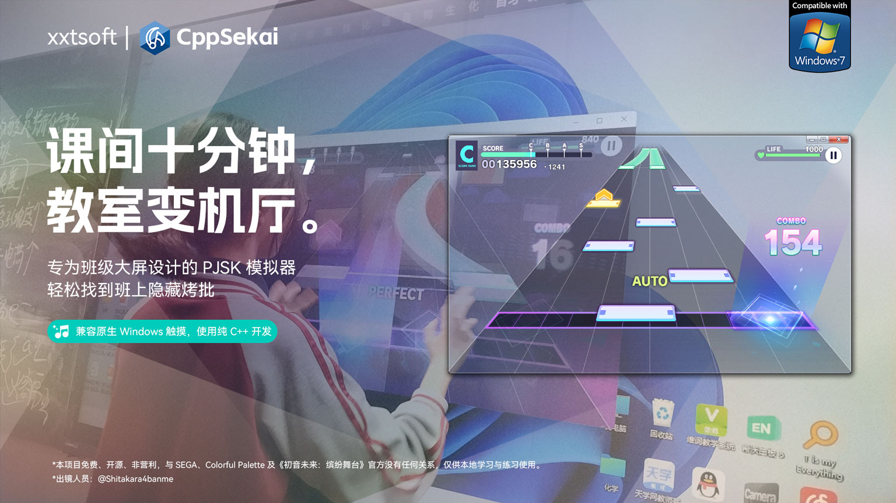
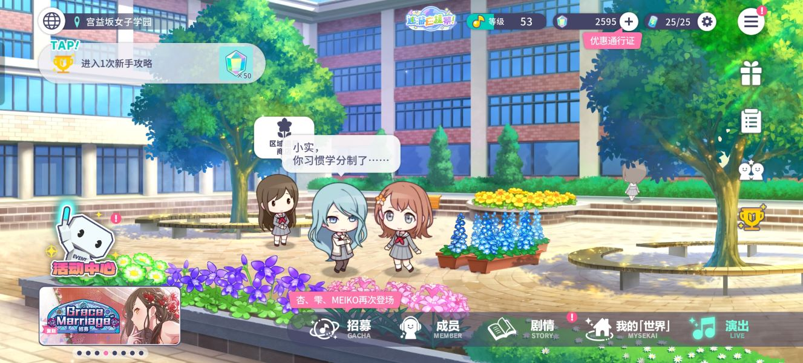
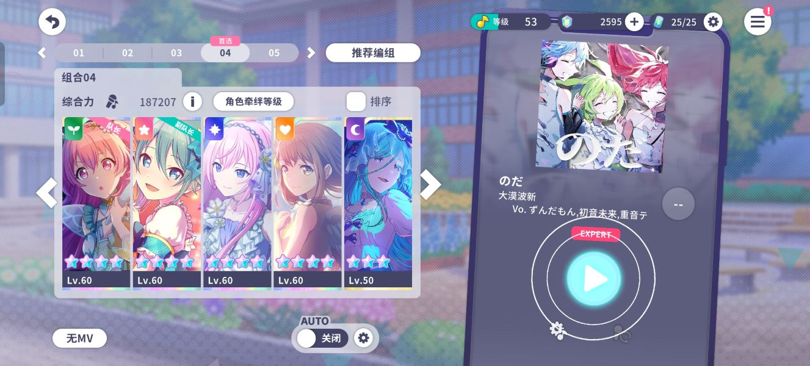
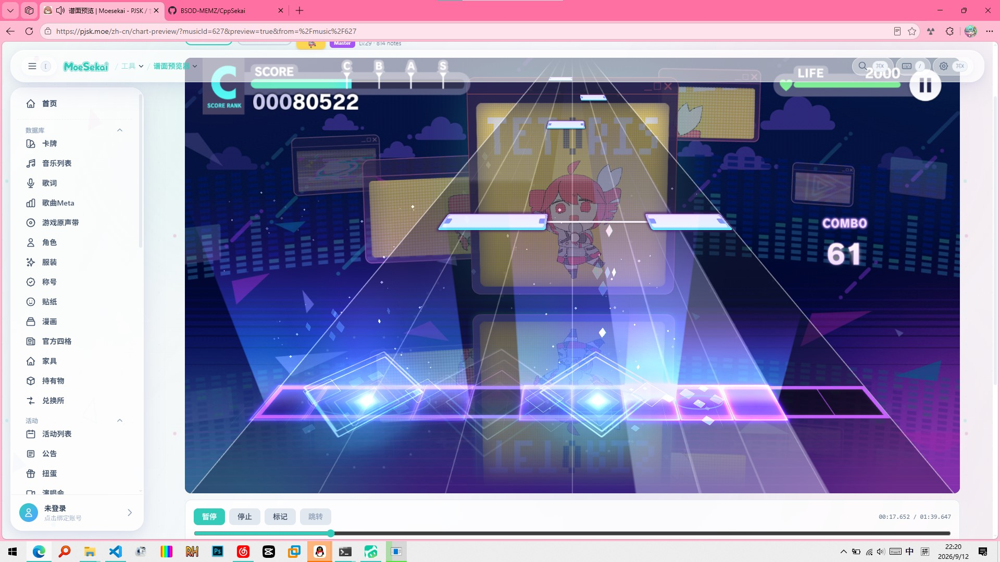
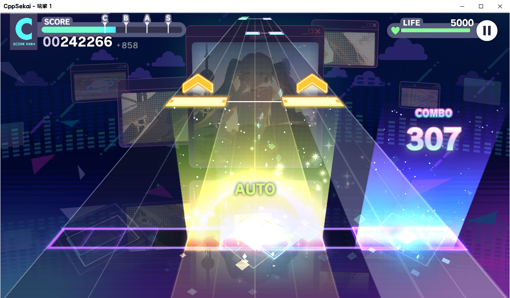
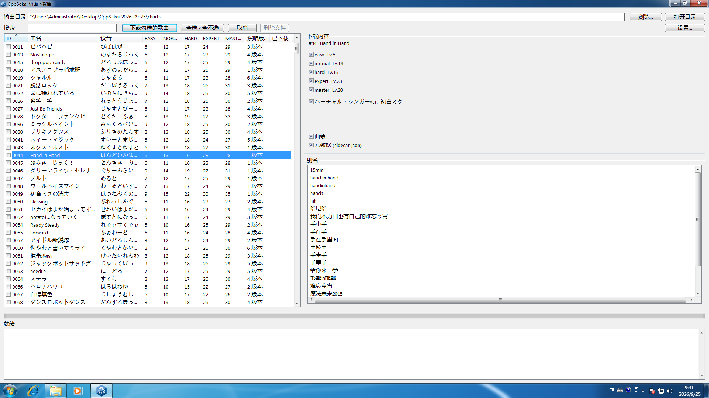
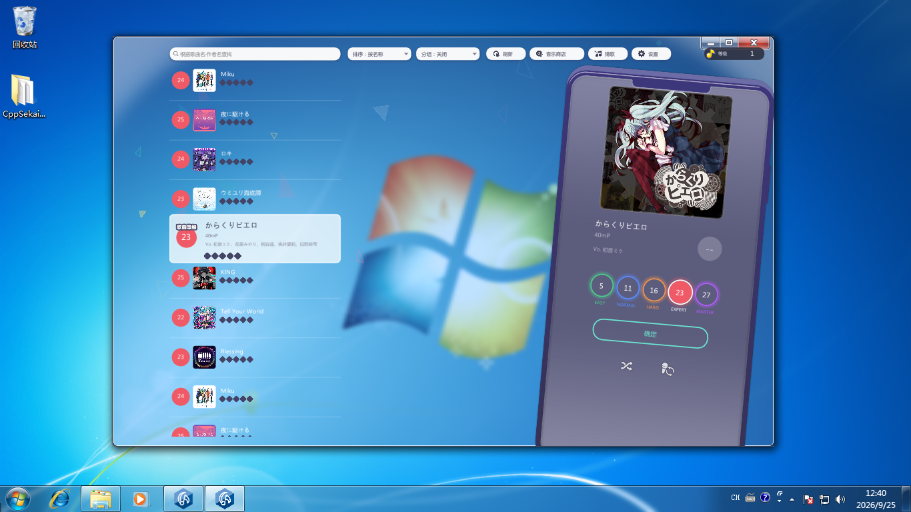
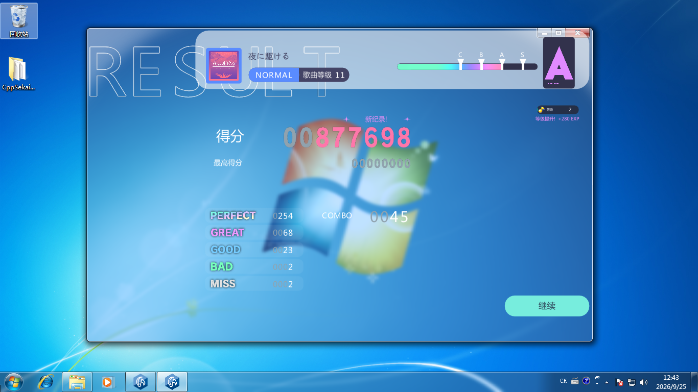
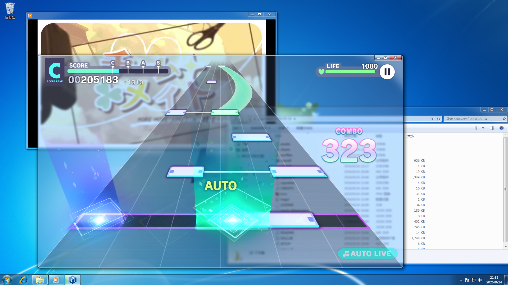
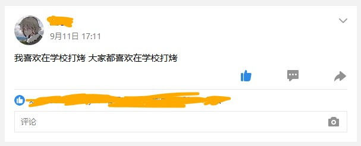

CppSekai 需要你的帮助！
CppSekai 需要你的帮助！
由于版权问题，我无法在公开平台宣传本作品，因此希望有小伙伴帮忙重绘游戏内部资源来规避版权风险，如果你愿意，可以联系我（xxt8582753@126.com）
传送到 GitHub 项目地址

世界计划（在国内被称为《初音未来：缤纷舞台》，有时简称为PJSK或烤，如下图）是一个非常棒的音乐节奏类手机社交卡牌网络游戏，但它尚未适配Windows平台
原游戏截图（点击展开）


但是学校那么大一块屏幕不能打游戏确实有点遗憾，况且还支持多点触摸。。wmc想出勤了可以用MajdataPlay，而烤批手痒了只能看谱面确认。所以我萌生了将pjsk移植到Windows的想法。
踩在巨人的肩膀上
发现一个开源项目：sekai-mmw-preview-web它可以在网页中预览pjsk的SUS格式谱面，并且还原程度相当高（如图所示）

有了这个参考，工作量瞬间减轻了不少。虽然这明显是一个web项目，但令人吃惊的是，这个项目大量使用C++代码！
我决定使用C++进行Windows原生开发——一是可复用大量代码块，二是没有占用极大的Unity之类的游戏引擎。我对Electron深恶痛绝，我只想做一个学校垃圾电脑也能跑满60帧的音游，这也是为什么项目命名为CppSekai
那么，C++20写代码，SDL2输入事件处理，OpenGL 3.3 core的渲染机制形成了。
大氛编时代来临
由于本人C++水平堪比两斤鸡粪，如果没有DeepSeek V4.1 Flash、GLM 5.3 Flash、Hy4-Preview和WorkBuddy给的免费token（没接广，我真心不喜欢tx的东西，但是有免费鸡蛋我还是要的）支持，我不可能完成这个项目（
开发
虽说有上述GitHub repo作参考，但它只适用于AutoPlay，也就是说判定逻辑什么的还是要自己来，约等于自己从头写一个音游。
我们从上游SpriteSheet素材移植粒子系统，然后对着原游戏截图一帧一帧地分析坐标。尤其是为了还原那个选曲界面，我爬取了Moesekai的资产浏览器。
但是不管怎么样，我拿不到pjsk的source，只能靠自己印象还原啦。
功能特性
- SUS 谱面原生解析演奏：12 轨，所有音符全部支持。

- 最牛逼的性能优化：没有 Electron，没有引擎，release 带了资源都只有 6.9MB，纯 C++ 编写性能负担极低，老赛扬都能玩。
- 自带音乐商店：国服日服随便下。

- 判定、结算页面对齐原作：一比一高度还原。


- 三种输入共用一条路径：专为触屏 Windows 设计，但键盘 12 键、鼠标左右键也能玩，还可以使用 Xbox 手柄操作界面 UI 元素。
- 本地多人：同一台机器开几个窗口一起打，和同学在班上拼机。
- 别名搜索数据库：自带超大数据库（约 1.2 万条），海底谭你搜海底捞，モニタニング你搜视奸都能识别。
- 系统集成和特性适配：Windows 媒体浮层（SMTC）显示曲名与进度，任务栏按钮上跑进度条（都只在 Win10+）在 Win7 上还能开启全局 Aero。

跑起来
Win7 上还得装一次 UCRT / VC++ 2015-2022 运行库（当然学校电脑基本上都打了补丁，直接跑就行）；Win10+ 开箱即用。
双击 cppsekai.exe 开始游玩，双击 chartdl.exe 下载谱面。
操作
| 输入 | 操作 | 说明 |
|---|---|---|
| 键盘 | Z S X D C V G B H N J M |
12 条轨，Z 在最左 |
| 键盘 | SPACE |
暂停 |
| 键盘 | F / H / ESC |
全屏切换 / 设置面板 / 返回 |
| 键盘 | F5 |
选歌界面重新扫描 charts/ |
| 鼠标 | 左键 / 右键 | 各算一个指针，按住不放为长条 |
| 触摸 | 多指 | 多指同时判定 |
| 手柄 | 方向键 / 左摇杆 | 上下选歌 + 换难度 |
| 手柄 | A / START / Y |
开打 / 设置面板/ 重新扫描 |
| 手柄 | B / BACK |
关掉当前弹窗或设置卡，等同 ESC |
Q&A
Q：为什么叫这个名字？ A：为了强调这个项目使用纯 C++ 制作（其实是我根本就不会起名字）
Q：为什么没有歌 / 列表里是空的？
A：仓库不自带谱面与音频。打开附带的 chartdl.exe 下载谱面。
Q：放进去了却不显示 / 歌名显示成 xxxx master？
A：前者基本是文件名不符合 <4位id>_<难度>.sus（或没按 F5 重扫）；后者是缺 sidecar 的
title。
Q：长条（hold）什么时候算断？ A：尾判是松手判定，结束前在容错窗口内松手给 Perfect / Great / Good，一直按到底也是 Perfect，只有明显提前松手才断连。窗口在 设置 → 判定 → 长条容错。
Q：键盘打不出左右 flick？ A：键盘一个键没有方向，只能发向上 flick；左右方向必须用鼠标或触摸。触摸屏上滑很难触发的话，开 设置 → 判定 → Flick 视作 Tap。
Q：手柄能打歌吗？ A：不能，手柄只做菜单。12 轨的东西手柄打不了，这是有意的（
Q：触摸屏能用吗？多指呢？ A：能。触摸走 SDL 的 touch→mouse 合成，多指对应多轨；不想看到系统那圈触摸涟漪可以在设置里关掉。
Q：怎么和别人一起打（同机联机）？ A：设置 → 系统 → 多人游玩：重启后再次双击 exe 会出现新窗口，有几个人你就开几个窗口，一般都能自动连上去。
Q：为什么这首歌没有切换歌手 / 面板里只有一个版本？
A：面板只列出你谱面目录里真的存在音频的演唱版本（se_/vs_/an_/cl_<id>_<n>.mp3），有几个就显示几张卡。
Q：为什么没有 3D MV / live2d / 角色？ A：目前仅仅是一个谱面播放器。
Q：Windows 7 能跑吗？ A：能（SP1 起），但要自己装一次 UCRT / VC++ 2015-2022 运行库；Win10+ 开箱即用。媒体浮层（SMTC）与任务栏进度条只有 Win10+ 才有。
Q：双击没反应 / 报缺 DLL？
A：SDL2.dll 必须和 exe 放同一目录。日志写在当前工作目录的 cppsekai.log，先看它最后几行。
Q：能跑在 Linux / macOS / 手机上吗？ A：只做 Windows 原生：平台层用了 Win32 的媒体会话、任务栏进度和命名共享内存。想看网页版可以去上游 sekai-mmw-preview-web。
Q：会联网吗？会上传什么吗？
A：游戏本体没有任何网络代码。只有 chartdl.exe 下载谱面时会联网（地址来自公开的资源镜像），也不上传任何东西。
未来？
事实上，我感到十分矛盾和困惑：我应该在自己“新造一个游戏”的路上越走越远，还是坚持还原原版游戏？
目前我是继承上游AGPL 3.0许可证开源，但实际上，我直接引用官方的资源，用什么许可证都是不合适的。
并且，世界计划的魅力远远不止于单纯的音乐游戏，但如果我把抽卡、剧情、烤森什么的都还原，工程量多大先不说，sega绝对是要告我的（
其实我本来是毫不担心版权问题的，直到我发现上游mmw以及其它参考的repo要么归档要么直接404我就慌了，我也怕被DMCA，但是自己辛辛苦苦做了半个月的东西结果不能发出来换谁都不好受。因此，这件事也更坚定了我只开发免费开源软件甚至放弃版权的决心。
我后期工作重心主要是增加多人模式（校内多台一体机联机，我们学校变成神山高校指日可待）和添加…中二节奏…手台…支持?
セカイ？
世界计划中的星乃一歌等人就是误打误撞来到了「世界」中，并与6位虚拟歌手相遇。虚拟歌手们以不同的形象出现并生活在不同的「世界」中，帮助人们找到他们真实的「心愿」。
所以我想，我正在用技术创造属于我的「世界」。
最后，来看看其他用户怎么说吧：
